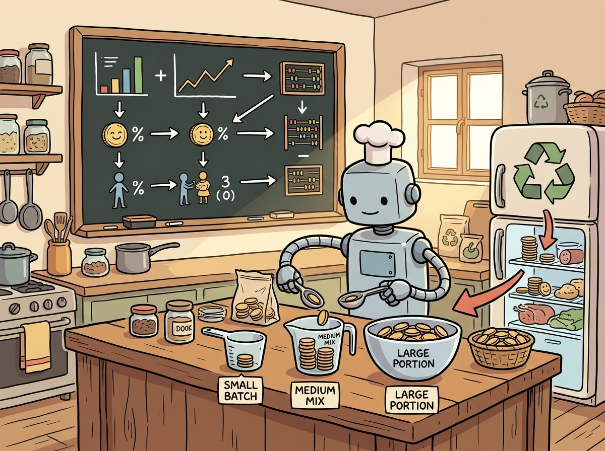

"The cheapest token is the one you never generate."
A Methodical Compass, Token-Thrifty AI Agent
LLM costs scale with usage, and without deliberate economic design, a successful product can become unprofitable overnight. This section provides the engineering patterns that control LLM economics: token budgeting at request, user, and feature levels; cascade architectures that route queries to the cheapest adequate model; semantic caching that eliminates redundant inference; and prompt optimization that reduces token counts without sacrificing quality. These techniques connect the inference optimization from Chapter 09 to the ROI measurement from Section 30.3, turning cost management from a reactive budget exercise into a proactive engineering discipline.
Prerequisites
This section builds on ROI measurement from Section 30.3, compute planning from Section 30.5, evaluation and observability from Chapter 27, and inference optimization from Chapter 09. Familiarity with LLM API pricing models is helpful.

30.7.1 Token Budgeting Strategies
Token consumption is the primary cost driver for LLM applications. Without explicit budgets, costs grow unpredictably as users discover new use cases and usage patterns evolve. A token budgeting system allocates consumption limits at three levels: per-request (preventing a single query from consuming an entire day's budget), per-user (ensuring equitable access across the organization), and per-feature (allowing product teams to control costs for specific capabilities).
The per-request budget sets a hard ceiling on the total tokens (input plus output) for any single interaction. This prevents pathological cases: a user pasting a 100-page document into the chat, or an agent entering a loop that generates thousands of tool calls. The per-user budget resets on a daily or monthly cycle and tracks cumulative consumption. The per-feature budget lets product managers allocate a fixed token envelope to each product surface (the customer support chatbot gets 10M tokens/day, the code review assistant gets 5M tokens/day) and receive alerts when consumption approaches the limit.
# Example: Three-tier token budget enforcement
from dataclasses import dataclass
from datetime import datetime, timezone
import time
@dataclass
class BudgetConfig:
max_tokens_per_request: int = 32_000
max_tokens_per_user_daily: int = 500_000
max_tokens_per_feature_daily: int = 10_000_000
class TokenBudgetEnforcer:
"""Enforces token budgets at request, user, and feature levels."""
def __init__(self, redis_client, config: BudgetConfig):
self.redis = redis_client
self.config = config
def check_budget(
self,
user_id: str,
feature_id: str,
estimated_tokens: int,
) -> dict:
"""Check all three budget tiers before allowing a request."""
today = datetime.now(timezone.utc).strftime("%Y-%m-%d")
# Tier 1: Per-request limit
if estimated_tokens > self.config.max_tokens_per_request:
return {
"allowed": False,
"reason": f"Request exceeds per-request limit "
f"({estimated_tokens:,} > {self.config.max_tokens_per_request:,})",
}
# Tier 2: Per-user daily limit
user_key = f"budget:user:{user_id}:{today}"
user_used = int(self.redis.get(user_key) or 0)
if user_used + estimated_tokens > self.config.max_tokens_per_user_daily:
return {
"allowed": False,
"reason": f"User daily budget exhausted "
f"({user_used:,} used of {self.config.max_tokens_per_user_daily:,})",
}
# Tier 3: Per-feature daily limit
feature_key = f"budget:feature:{feature_id}:{today}"
feature_used = int(self.redis.get(feature_key) or 0)
if feature_used + estimated_tokens > self.config.max_tokens_per_feature_daily:
return {
"allowed": False,
"reason": f"Feature '{feature_id}' daily budget exhausted",
}
return {"allowed": True, "user_remaining": self.config.max_tokens_per_user_daily - user_used}
def record_usage(self, user_id: str, feature_id: str, actual_tokens: int):
"""Record actual token consumption after a request completes."""
today = datetime.now(timezone.utc).strftime("%Y-%m-%d")
pipe = self.redis.pipeline()
for key in [
f"budget:user:{user_id}:{today}",
f"budget:feature:{feature_id}:{today}",
]:
pipe.incrby(key, actual_tokens)
pipe.expire(key, 86400 * 2) # expire after 2 days
pipe.execute()
A SaaS startup reduced their monthly LLM spend from $47,000 to $8,200 by implementing a three-tier cascade: 70% of queries went to GPT-4o-mini ($0.15/M tokens), 25% to Claude Sonnet ($3/M tokens), and only 5% to GPT-4o ($5/M tokens). Customer satisfaction scores stayed flat. The CEO's summary: "We were serving filet mignon to everyone, including people who just wanted a sandwich."
30.7.2 Cascade Design: Routing Queries by Complexity
Not every query deserves the most expensive model. A cascade (or tiered routing) system classifies incoming queries by complexity and routes them to the cheapest model capable of handling them. Simple queries ("What are your business hours?") go to a small, fast model. Complex queries requiring multi-step reasoning go to a large frontier model. This approach can reduce costs by 60 to 80% while maintaining quality on hard queries.
The router itself must be cheap to run. Common approaches include: a lightweight classifier trained on historical query/complexity pairs, a keyword or regex-based heuristic, or a small LLM call that evaluates complexity before routing. The best cascades also include a fallback escalation mechanism: if the small model's response scores below a confidence threshold, the query is automatically re-routed to the larger model.
# Example: Cost-aware cascade router with confidence-based escalation
from dataclasses import dataclass
@dataclass
class ModelTier:
name: str
model_id: str
cost_per_1k_input: float # USD
cost_per_1k_output: float # USD
max_complexity: str # "simple", "moderate", "complex"
TIERS = [
ModelTier("small", "gpt-4o-mini", 0.00015, 0.0006, "simple"),
ModelTier("medium", "claude-sonnet-4", 0.003, 0.015, "moderate"),
ModelTier("large", "claude-opus-4", 0.015, 0.075, "complex"),
]
class CascadeRouter:
"""Routes queries to the cheapest capable model."""
def __init__(self, classifier, llm_clients: dict):
self.classifier = classifier
self.clients = llm_clients
async def route(self, query: str, context: dict) -> dict:
# Step 1: Classify query complexity (cheap operation)
complexity = self.classifier.classify(query)
tier = self._select_tier(complexity)
# Step 2: Call the selected model
response = await self.clients[tier.model_id].complete(query, context)
# Step 3: Check confidence; escalate if needed
if response["confidence"] < 0.7 and tier.name != "large":
next_tier = self._escalate(tier)
response = await self.clients[next_tier.model_id].complete(query, context)
response["escalated"] = True
response["original_tier"] = tier.name
response["final_tier"] = next_tier.name
else:
response["escalated"] = False
response["final_tier"] = tier.name
# Step 4: Record cost
response["cost_usd"] = self._compute_cost(
TIERS[[t.name for t in TIERS].index(response["final_tier"])],
response["input_tokens"],
response["output_tokens"],
)
return response
def _select_tier(self, complexity: str) -> ModelTier:
complexity_order = ["simple", "moderate", "complex"]
for tier in TIERS:
if complexity_order.index(complexity) <= complexity_order.index(tier.max_complexity):
return tier
return TIERS[-1]
def _escalate(self, current: ModelTier) -> ModelTier:
idx = [t.name for t in TIERS].index(current.name)
return TIERS[min(idx + 1, len(TIERS) - 1)]
def _compute_cost(self, tier: ModelTier, input_tokens: int, output_tokens: int) -> float:
return (input_tokens / 1000 * tier.cost_per_1k_input +
output_tokens / 1000 * tier.cost_per_1k_output)
The same result in 8 lines with LiteLLM Router:
# pip install litellm
from litellm import Router
router = Router(model_list=[
{"model_name": "simple", "litellm_params": {"model": "gpt-4o-mini"}},
{"model_name": "complex", "litellm_params": {"model": "gpt-4o"}},
], routing_strategy="cost-based-routing")
# LiteLLM handles fallback, retry, and cost tracking automatically:
response = router.completion(model="simple", messages=[{"role": "user", "content": query}])
print(f"Cost: ${response._hidden_params['response_cost']:.6f}")The cascade router pays for itself within days. In a typical enterprise deployment, 60 to 70% of queries are simple (FAQ lookups, status checks, basic reformatting). Routing these to a model that costs 100x less than the frontier model saves far more than the overhead of the routing classifier. The key metric to track is the escalation rate: if more than 30% of queries escalate from small to large, your classifier needs retraining or your complexity boundaries need adjustment.
30.7.3 Semantic Caching
Semantic caching stores LLM responses keyed by the semantic meaning of the query rather than its exact text. When a new query arrives, the system computes its embedding and searches the cache for similar previous queries. If a match exceeds a similarity threshold, the cached response is returned without calling the LLM. This is particularly effective for applications with repetitive queries (customer support, FAQ bots, internal help desks) where the same questions appear with minor phrasing variations.
Cache invalidation is the hard part. Cached responses become stale when the underlying knowledge changes (a product price update, a new policy, a corrected fact). Strategies include: time-based TTL (cache expires after N hours), event-based invalidation (a webhook from the CMS triggers cache flush), and scope-based invalidation (only clear cache entries whose source documents were modified).
# Example: Semantic cache with similarity threshold and TTL
import time
import hashlib
import numpy as np
from dataclasses import dataclass
@dataclass
class CacheEntry:
query: str
query_embedding: list[float]
response: str
model: str
created_at: float
ttl_seconds: int
source_doc_ids: list[str]
class SemanticCache:
"""Cache LLM responses by semantic similarity."""
def __init__(self, similarity_threshold: float = 0.95, default_ttl: int = 3600):
self.threshold = similarity_threshold
self.default_ttl = default_ttl
self.entries: list[CacheEntry] = []
def lookup(self, query_embedding: list[float]) -> str | None:
"""Find a cached response for a semantically similar query."""
now = time.time()
query_vec = np.array(query_embedding)
best_match = None
best_score = 0.0
for entry in self.entries:
# Check TTL
if now - entry.created_at > entry.ttl_seconds:
continue
# Compute cosine similarity
entry_vec = np.array(entry.query_embedding)
score = float(
np.dot(query_vec, entry_vec)
/ (np.linalg.norm(query_vec) * np.linalg.norm(entry_vec))
)
if score > best_score:
best_score = score
best_match = entry
if best_match and best_score >= self.threshold:
return best_match.response
return None
def store(self, query: str, embedding: list[float], response: str,
model: str, source_doc_ids: list[str] | None = None):
self.entries.append(CacheEntry(
query=query,
query_embedding=embedding,
response=response,
model=model,
created_at=time.time(),
ttl_seconds=self.default_ttl,
source_doc_ids=source_doc_ids or [],
))
def invalidate_by_source(self, doc_id: str):
"""Remove all cache entries that depend on a specific source document."""
self.entries = [
e for e in self.entries if doc_id not in e.source_doc_ids
]
def get_stats(self) -> dict:
now = time.time()
active = [e for e in self.entries if now - e.created_at <= e.ttl_seconds]
return {
"total_entries": len(self.entries),
"active_entries": len(active),
"expired_entries": len(self.entries) - len(active),
}
In production, the in-memory list shown above is replaced by a vector database (Qdrant, Pinecone, or Redis with vector search) that scales to millions of cached queries. The cost savings can be dramatic: a customer support bot with 40% cache hit rate at a 0.95 similarity threshold saves 40% of its LLM API costs, often paying for the vector database several times over.
The same result in 7 lines with GPTCache:
# pip install gptcache
from gptcache import cache
from gptcache.adapter import openai as cached_openai
from gptcache.embedding import Onnx
from gptcache.similarity_evaluation import OnnxModelEvaluation
cache.init(embedding_func=Onnx(), similarity_evaluation=OnnxModelEvaluation())
cache.set_openai_key()
# All subsequent calls use semantic caching automatically:
response = cached_openai.ChatCompletion.create(
model="gpt-4o-mini",
messages=[{"role": "user", "content": "What is your return policy?"}],
)
# Similar queries hit cache; dissimilar queries call the API30.7.4 Prompt Optimization for Cost
Prompt design directly affects cost. A system prompt with 2,000 tokens is prepended to every request; with 100,000 requests per day, that system prompt alone costs the equivalent of 200 million input tokens daily. Systematic prompt optimization can reduce costs by 30 to 50% without degrading quality.
Key optimization techniques include: system prompt compression (rewriting verbose instructions into concise equivalents), few-shot reduction (testing whether 1 or 2 examples achieve the same quality as 5), context window trimming (sending only the most relevant retrieved documents rather than all of them), and output length control (instructing the model to respond concisely when verbose responses are unnecessary).
# Example: Prompt cost analyzer and optimizer
class PromptCostAnalyzer:
"""Analyze and optimize prompt costs across an LLM application."""
def __init__(self, tokenizer, cost_per_1k_input: float):
self.tokenizer = tokenizer
self.cost_per_1k = cost_per_1k_input
def analyze(self, messages: list[dict]) -> dict:
"""Break down token costs by message role."""
breakdown = {}
total = 0
for msg in messages:
role = msg["role"]
tokens = len(self.tokenizer.encode(msg["content"]))
breakdown[role] = breakdown.get(role, 0) + tokens
total += tokens
cost = total / 1000 * self.cost_per_1k
return {
"token_breakdown": breakdown,
"total_tokens": total,
"estimated_cost_usd": cost,
"system_prompt_pct": breakdown.get("system", 0) / max(total, 1) * 100,
}
def suggest_optimizations(self, messages: list[dict]) -> list[str]:
"""Suggest cost reduction strategies based on prompt structure."""
analysis = self.analyze(messages)
suggestions = []
if analysis["system_prompt_pct"] > 40:
suggestions.append(
f"System prompt is {analysis['system_prompt_pct']:.0f}% of total tokens. "
f"Consider compressing instructions or moving static content to a cached prefix."
)
# Count few-shot examples
user_msgs = [m for m in messages if m["role"] == "user"]
assistant_msgs = [m for m in messages if m["role"] == "assistant"]
if len(user_msgs) > 3 and len(assistant_msgs) > 2:
suggestions.append(
f"Found {len(assistant_msgs)} few-shot examples. "
f"Test whether 1 or 2 examples achieve comparable quality."
)
# Check for verbose context
for msg in messages:
if msg["role"] == "user" and len(self.tokenizer.encode(msg["content"])) > 4000:
suggestions.append(
"User message exceeds 4,000 tokens. Consider trimming retrieved "
"context to top-3 documents or summarizing before inclusion."
)
break
return suggestions
Prompt optimization must be validated against quality metrics. A system prompt compressed from 2,000 to 500 tokens might save 75% on input costs, but if it increases hallucination rate from 2% to 8%, the net effect is negative. Always run optimized prompts through your evaluation pipeline before deploying them to production. The best practice is to A/B test prompt changes, measuring both cost reduction and quality impact simultaneously.
30.7.5 Evaluation Cost Management
LLM-as-judge evaluation pipelines (see Chapter 27) themselves consume tokens. Running a GPT-4o judge over every production response doubles your token costs. Evaluation cost management applies the same economic thinking to the evaluation pipeline: use sampling (evaluate 10% of responses instead of 100%), use cheaper judge models for initial screening (a small model flags potentially bad responses, a large model evaluates only the flagged ones), and set explicit evaluation budgets per feature.
# Example: Evaluation budget manager with stratified sampling
import random
class EvalBudgetManager:
"""Manage evaluation costs with sampling and cascade judging."""
def __init__(self, daily_eval_budget_usd: float, judge_cost_per_eval: float):
self.daily_budget = daily_eval_budget_usd
self.cost_per_eval = judge_cost_per_eval
self.max_evals_per_day = int(daily_eval_budget_usd / judge_cost_per_eval)
self.evals_today = 0
def should_evaluate(self, response: dict) -> str:
"""Decide whether and how to evaluate a response."""
if self.evals_today >= self.max_evals_per_day:
return "skip" # budget exhausted
# Always evaluate: high-value features, new prompt versions, flagged responses
if response.get("feature_id") in ("customer_support", "legal_review"):
self.evals_today += 1
return "full_eval" # use the expensive judge
if response.get("prompt_version_is_canary"):
self.evals_today += 1
return "full_eval"
# Sample 10% of remaining traffic
if random.random() < 0.10:
self.evals_today += 1
return "sampled_eval"
return "skip"
def get_status(self) -> dict:
return {
"evals_today": self.evals_today,
"max_evals": self.max_evals_per_day,
"budget_remaining_usd": (self.max_evals_per_day - self.evals_today) * self.cost_per_eval,
}
30.7.6 Build vs. Buy: The Economic Perspective
The build-vs.-buy decision (covered architecturally in Section 30.4) has a distinct economic dimension. A self-hosted open-weight model has zero marginal API cost but requires GPU infrastructure, operational expertise, and ongoing maintenance. An API-based model has high marginal cost but zero infrastructure burden. The crossover point depends on your volume: at low volumes, APIs win; at high volumes, self-hosting wins. The breakeven calculation must account for the full cost stack.
For most enterprises, a hybrid strategy is optimal: use APIs for frontier-quality tasks (complex reasoning, creative generation) and self-hosted models for high-volume, lower-complexity tasks (classification, extraction, embeddings). This approach captures the best economics of both worlds while maintaining access to the strongest models for the hardest problems.
| Cost component | API (Claude Sonnet 4) | Self-hosted (Llama 3.3 70B, 2 × H100) |
|---|---|---|
| Per-request cost | $0.0135 | $0.00875 |
| Fixed monthly infrastructure | $0 (pay-per-use) | $5,040 (2 GPUs × $3.50/hr × 720 hrs) |
| Engineering operations overhead | $0 | ~$15,000/month equivalent |
| Raw breakeven volume | 373,333 requests/month (cost-only crossover) | |
| Adjusted breakeven volume | 1,484,000 requests/month (including ops overhead) | |
30.7.7 Cost Observability
Cost observability means tracking and visualizing LLM spending at the granularity needed to make decisions: cost per query, cost per user, cost per feature, and cost per conversation. Without this visibility, cost optimization is guesswork. The observability stack should include real-time dashboards showing current spend rate, anomaly detection that alerts when a feature's cost suddenly spikes, and historical trend analysis for budget planning.
The implementation builds on the observability infrastructure from Module 27 (Observability sections). Every LLM response already includes token counts in its metadata. The cost observability layer multiplies these counts by the model's per-token pricing and aggregates the results along the dimensions that matter for your business.
# Example: Cost observability with anomaly detection
from collections import defaultdict
from datetime import datetime, timezone
import statistics
class CostObserver:
"""Track and alert on LLM costs across dimensions."""
def __init__(self, alert_callback):
self.alert = alert_callback
self.costs_by_feature: dict[str, list[float]] = defaultdict(list)
self.costs_by_user: dict[str, float] = defaultdict(float)
self.hourly_costs: list[float] = []
def record(self, feature_id: str, user_id: str, cost_usd: float):
"""Record a cost event and check for anomalies."""
self.costs_by_feature[feature_id].append(cost_usd)
self.costs_by_user[user_id] += cost_usd
# Anomaly detection: alert if a single request costs 10x the feature average
feature_costs = self.costs_by_feature[feature_id]
if len(feature_costs) > 100:
avg = statistics.mean(feature_costs[-100:])
if cost_usd > avg * 10:
self.alert(
level="warning",
message=f"Cost anomaly: feature '{feature_id}' request cost "
f"${cost_usd:.4f} (10x the average ${avg:.4f})",
metadata={
"feature_id": feature_id,
"user_id": user_id,
"cost": cost_usd,
"average": avg,
},
)
def get_dashboard_data(self) -> dict:
"""Generate dashboard metrics."""
return {
"cost_by_feature": {
f: {"total": sum(costs), "avg": statistics.mean(costs), "count": len(costs)}
for f, costs in self.costs_by_feature.items()
},
"top_users_by_cost": sorted(
self.costs_by_user.items(), key=lambda x: x[1], reverse=True
)[:20],
"total_cost_usd": sum(
sum(costs) for costs in self.costs_by_feature.values()
),
}
30.7.8 ROI Framework: Measuring LLM Value
Cost optimization without value measurement is incomplete. The ROI framework connects LLM costs to business outcomes: time saved (measured in hours of human labor replaced or accelerated), quality improvement (measured by error rates, customer satisfaction, or output consistency), and revenue impact (measured by conversion rate changes, deal velocity, or new revenue streams enabled by LLM features).
The formula is straightforward: ROI = (Value Generated - Total Cost) / Total Cost. The challenge lies in measuring value accurately. Time savings are the easiest to quantify: if a code review assistant reduces review time from 30 minutes to 10 minutes, the value per review is 20 minutes of engineer time multiplied by the loaded hourly rate. Quality improvements require A/B testing: compare error rates with and without the LLM feature. Revenue impact requires attribution models that isolate the LLM's contribution from other factors.
Who: A VP of Customer Success and a finance business partner at a mid-size SaaS company handling 20,000 support tickets per month
Situation: The company deployed an LLM-powered support chatbot to deflect routine tickets (password resets, billing questions, feature how-tos) and provide suggested responses for escalated cases handled by human agents.
Problem: The CFO questioned the $14,000/month spend ($8,500 LLM API, $500 vector database, $5,000 equivalent engineering maintenance) and asked for a rigorous ROI analysis before approving the budget for the next fiscal year.
Decision: The VP of Customer Success partnered with finance to measure two value streams: ticket deflection (45% of tickets handled without a human agent, saving $12 per deflected ticket) and agent acceleration (15% faster resolution on escalated tickets where agents used chatbot suggestions). They ran a controlled A/B test over four weeks to validate the deflection rate.
Result: Monthly value was $114,000 ($108,000 from 9,000 deflected tickets plus $6,000 from faster escalated resolution). ROI: ($114,000 - $14,000) / $14,000 = 714%. Even with conservative estimates (halving the deflection value), ROI exceeded 300%. The CFO approved a two-year budget commitment.
Lesson: LLM ROI cases are strongest when you can measure a concrete per-unit cost displacement (such as cost per ticket) rather than relying on qualitative productivity claims.
Lab: Cost-Aware Routing with Budget Enforcement
This lab ties together the economic patterns from this section into a working system. The implementation combines cascade routing, token budgets, semantic caching, and cost tracking into a single middleware layer that wraps any LLM application.
# Lab: Complete cost-aware LLM middleware
class CostAwareMiddleware:
"""
Middleware that enforces budgets, checks cache, routes to the cheapest
capable model, and tracks costs.
"""
def __init__(
self,
budget: TokenBudgetEnforcer,
cache: SemanticCache,
router: CascadeRouter,
observer: CostObserver,
embedder,
):
self.budget = budget
self.cache = cache
self.router = router
self.observer = observer
self.embedder = embedder
async def process(
self,
query: str,
user_id: str,
feature_id: str,
context: dict,
) -> dict:
# Step 1: Estimate tokens and check budget
estimated_tokens = len(query.split()) * 2 # rough estimate
budget_check = self.budget.check_budget(user_id, feature_id, estimated_tokens)
if not budget_check["allowed"]:
return {
"response": "Your token budget has been reached for today. "
"Please try again tomorrow or contact your administrator.",
"cost_usd": 0.0,
"source": "budget_limit",
}
# Step 2: Check semantic cache
embedding = await self.embedder.embed(query)
cached = self.cache.lookup(embedding)
if cached:
return {
"response": cached,
"cost_usd": 0.0,
"source": "cache",
}
# Step 3: Route to cheapest capable model
result = await self.router.route(query, context)
# Step 4: Cache the response
self.cache.store(
query=query,
embedding=embedding,
response=result["response"],
model=result["final_tier"],
)
# Step 5: Record budget usage and cost
actual_tokens = result["input_tokens"] + result["output_tokens"]
self.budget.record_usage(user_id, feature_id, actual_tokens)
self.observer.record(feature_id, user_id, result["cost_usd"])
return {
"response": result["response"],
"cost_usd": result["cost_usd"],
"source": f"model:{result['final_tier']}",
"escalated": result.get("escalated", False),
}
Economic design is not an afterthought. The most successful LLM deployments build cost awareness into the architecture from day one. Retrofitting budgets, caching, and routing onto a system that was designed without them is significantly harder than incorporating these patterns during initial development. The cost-aware middleware pattern shown in this lab adds minimal latency (one embedding computation and one cache lookup) while potentially saving 50 to 70% of LLM API costs through caching and cascade routing combined.
Key Takeaways
- Token budgeting assigns per-request cost ceilings that prevent runaway spending from verbose prompts, excessive tool calls, or retry loops.
- Cascade design routes queries by complexity: simple requests go to cheap, fast models; complex requests escalate to expensive, capable models, optimizing cost per quality level.
- Semantic caching stores LLM responses keyed by embedding similarity, serving cached results for semantically equivalent queries and reducing costs by 30 to 60%.
- Prompt optimization reduces token counts through compression, template reuse, and eliminating redundant context, directly cutting per-request costs.
- Evaluation cost management matters because running LLM-as-judge evaluations at scale can itself become a significant cost center; batching, caching, and using smaller judge models help control it.
Exercises
Design a token budgeting strategy for a company with 500 employees using an internal LLM assistant. The company spends $30,000/month on LLM APIs. Allocate budgets across three user tiers (basic, power user, executive) and three features (code assistant, document Q&A, email drafting).
Answer Sketch
At $30K/month with average cost of $0.01 per 1K tokens, total budget is approximately 3 billion tokens/month. Basic users (400): 2M tokens/day each (800M/day). Power users (80): 10M tokens/day each (800M/day). Executives (20): 20M tokens/day each (400M/day). Feature budgets: code assistant 50% ($15K), document Q&A 30% ($9K), email drafting 20% ($6K). Set per-request maximums at 32K tokens to prevent abuse. Alert at 80% of daily user budgets.
Implement a cascade router that classifies queries into three complexity tiers using a simple heuristic (query length, presence of technical terms, question type). Evaluate it on a sample dataset and compute the cost savings compared to routing everything to the largest model.
Answer Sketch
Build a classifier that uses query length (under 50 tokens = simple), presence of reasoning keywords ("analyze", "compare", "explain why" = complex), and question type (yes/no = simple, open-ended = moderate/complex). Test on 1,000 sample queries. Compute cost as: sum of (tier cost * queries routed to tier). Compare to baseline of all queries going to the large model. Expected savings: 55 to 65% for a typical enterprise query distribution.
Build an ROI model for deploying an LLM-powered code review assistant. Include all cost components (API, infrastructure, engineering time) and all value components (time saved, bug reduction, knowledge sharing). Calculate the breakeven point in months.
Answer Sketch
Costs: API ($5K/month), infrastructure ($1K/month), 0.5 FTE maintenance ($7.5K/month), initial setup (1 FTE for 2 months = $30K). Monthly cost: $13.5K. Value: 50 engineers saving 20 min/review, 3 reviews/day = 50 hours/day saved. At $75/hour loaded rate = $3,750/day = $75K/month. Bug reduction: 15% fewer production bugs, each costing $2K average = $6K/month savings. Total monthly value: $81K. ROI: 500%. Breakeven: month 1 (even accounting for setup costs, payback period is under 2 months).
Autonomous cost optimization agents are beginning to emerge: systems that monitor real-time token consumption, model performance, and latency, then automatically adjust cascade thresholds, cache policies, and model routing without human intervention. Combined with inference-time compute markets (where providers bid to serve requests at the lowest cost for a given quality level), these approaches may fundamentally change how organizations budget for and consume LLM compute.
What Comes Next
This concludes the Strategy, Product, and ROI chapter. Continue to Part X: Frontiers, which looks beyond today's state of the art to emerging architectures and AI's broader societal implications.
Chen, L., Zaharia, M., Zou, J. (2023). "FrugalGPT: How to Use Large Language Models While Reducing Cost and Improving Performance." arXiv:2305.05176.
Introduces strategies for reducing LLM API costs, including model cascading, prompt adaptation, and caching. The foundational paper for the cost optimization techniques discussed throughout this section.
Anthropic. (2025). "Prompt Caching Documentation." Anthropic Docs. docs.anthropic.com.
Official documentation for Anthropic's prompt caching feature, which reduces costs and latency for repeated prompt prefixes. Directly relevant to the caching strategies discussed in this section.
OpenAI. (2025). "API Pricing and Token Usage." OpenAI Platform. platform.openai.com.
OpenAI's pricing page with token-level cost breakdowns for each model tier. Essential reference for the cost calculations and model selection decisions in this section.
a16z. (2024). "The Economics of AI Infrastructure." Andreessen Horowitz Research.
Analyzes the economics of AI infrastructure at scale, including how costs evolve as applications grow from prototype to production. Provides strategic context for the tactical optimizations discussed in this section.
Bang, Y. et al. (2023). "A Survey on LLM-as-a-Judge." arXiv.
Surveys the use of LLMs as automated evaluators, relevant to the quality-monitoring aspect of cost optimization. Understanding LLM-as-judge reliability helps teams balance evaluation costs against human annotation budgets.
Vllm Project. (2025). "vLLM: Easy, Fast, and Cheap LLM Serving." github.com/vllm-project/vllm.
Documentation for vLLM, a high-throughput inference engine that uses PagedAttention for efficient memory management. The primary tool for teams self-hosting models who want to maximize throughput per GPU dollar.
GPTCache. (2024). "Semantic Cache for LLMs." github.com/zilliztech/GPTCache.
Open-source semantic caching library that stores and retrieves LLM responses based on query similarity. A practical implementation of the semantic caching optimization discussed in this section.